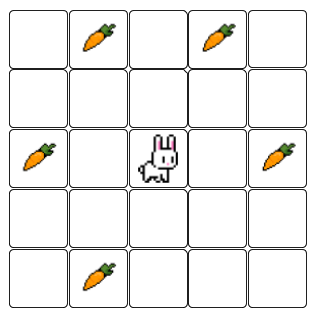
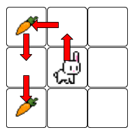
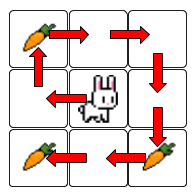
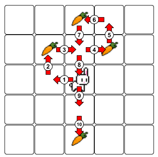

Ajuda al conill a menjar-se la pastanagues!
El conill es troba inicialment en el centre de la graella, i es pot moure en les quatre direccions, una casella cada vegada.
Quants moviments necessita per a menjar-se totes les pastanagues en l'ordre correcte?
Input Format
En primer lloc ve un nombre imparell que indica el tamany de la graella: .
A continuació ve la graella. Les pastanagues estan indicades amb el número d'ordre en què s'han de menjar.
Constraints
-
Output Format
S'escriurà el nombre de moviments que necessita el conill per a menjar-se totes les pastanagues en l'ordre correcte.
Sample Input 0
3
1 0 0
0 0 0
2 0 0
Sample Output 0
4
Explanation 0

Sample Input 1
3
1 0 0
0 0 0
3 0 2
Sample Output 1
8
Explanation 1

Sample Input 2
5
0 0 3 0 0
0 1 0 2 0
0 0 0 0 0
0 0 0 0 0
0 0 4 0 0
Sample Output 2
10
Explanation 2

Sample Input 3
5
0 0 0 0 0
0 2 3 4 0
0 1 0 5 0
0 8 7 6 0
0 0 0 0 0
Sample Output 3
8
Sample Input 4
5
0 0 0 0 0
0 3 2 4 0
0 1 0 6 0
0 8 7 5 0
0 0 0 0 0
Sample Output 4
12
Sample Input 5
9
10 0 5 0 0 0 0 0 12
0 0 0 0 0 4 0 0 0
0 0 0 0 0 0 0 0 7
1 0 0 0 0 0 0 0 0
0 0 0 0 0 0 11 0 0
0 0 0 0 0 0 0 0 0
0 0 0 6 0 0 2 0 0
0 3 0 0 0 0 0 0 0
8 0 0 0 0 0 0 0 9
Sample Output 5
104